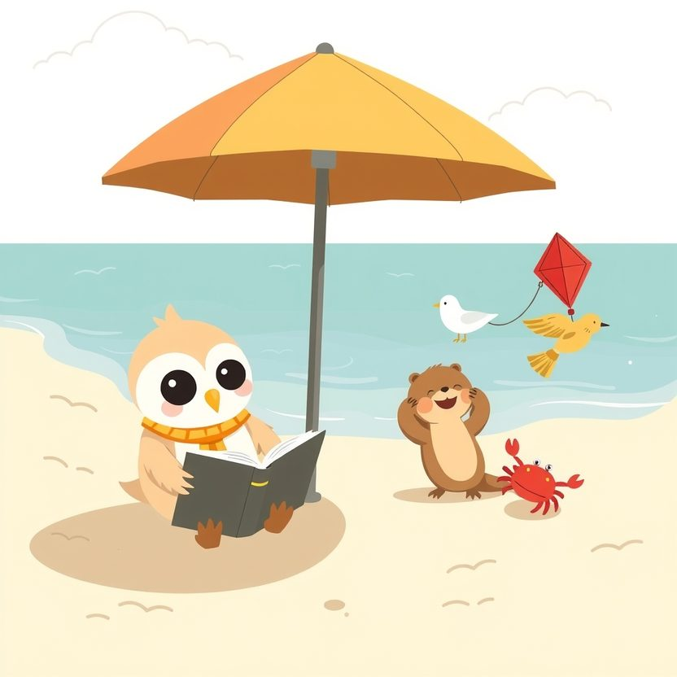

Titistoire › Les Étoiles (3-6 ans)
Plume et le cerf-volant rouge
Une histoire de Plume la chouette pour parler de : se faire de nouveaux amis.

▶ Écouter et regarder l'histoire
Gratuit, sans inscription : la voix lit, le texte suit mot à mot, les images tournent comme dans un album.
Le texte de l'histoire
C'est le premier jour des vacances, à la plage des Dunes. Plume ne connaît personne. Elle s'est installée à l'ombre du parasol, avec un livre qu'elle ne lit pas.
Car un peu plus loin, trois enfants jouent. Une petite loutre, un goéland, et un crabe. Ils galopent derrière un cerf-volant rouge, et ils rient aux éclats.
Plume les épie par-dessus son livre. Elle aimerait tant jouer avec eux. Mais comment on fait, pour entrer dans un jeu déjà commencé ?
Dans sa tête, elle prépare sa phrase. « Bonjour, je m'appelle Plume, est-ce que je peux jouer avec vous ? » Elle la répète dix fois. Vingt fois. Elle la connaît par cœur.
Elle se lève, fait trois pas. Son cœur tambourine jusque dans ses oreilles. « Et s'ils disent non ? Et s'ils rient ? Et s'ils ne m'entendent même pas ? »
Elle fait demi-tour et se rassoit, toute dépitée. Son livre est à l'envers. Elle ne s'en aperçoit même pas.
Le deuxième jour, c'est pareil. Elle s'approche un peu plus. Tout près d'eux, elle ramasse des coquillages, en espérant qu'ils la remarquent. Ils ne la remarquent pas.
« Peut-être qu'ils viendront me chercher », espère-t-elle. Elle attend. Elle fait un petit tas de sable. Elle attend encore.
Mais ils sont tout à leur jeu. Ce n'est pas qu'ils ne veulent pas d'elle. Ils ignorent même qu'elle existe.
Le troisième jour, le vent se lève. Le cerf-volant rouge tire, tire sur sa ficelle. Et soudain, clac ! La ficelle casse. Le cerf-volant s'échappe au-dessus des dunes.
Les trois enfants s'élancent à ses trousses. Il monte, il tournoie, et s'en va s'accrocher tout en haut du grand pin, à la plus haute branche.
« Oh non ! » La loutre saute, les bras tendus. Le crabe pince le tronc. Le petit goéland bat des ailes, mais il ne sait pas encore voler. Le cerf-volant est bien trop haut.
Sous son parasol, Plume n'en a pas perdu une miette. Et elle sait une chose : elle, elle vole. En dix secondes, elle pourrait le décrocher.
Mais pour ça, il faudrait y aller. Devant eux. Sans sa phrase, qui s'est envolée de sa tête avec le cerf-volant. Ses pattes sont lourdes comme deux seaux de sable mouillé.
La petite loutre s'est assise au pied du pin. Son menton tremblote. Plume regarde ce menton. Et ses pattes se soulèvent toutes seules.
Sans un mot, elle court, déploie ses ailes, et elle monte. Plus haut que le parasol. Plus haut que la dune. Jusqu'à la dernière branche du grand pin.
Le cerf-volant est tout entortillé. Du bout du bec, Plume démêle la ficelle, patiemment, nœud après nœud. En bas, trois têtes la contemplent, bouche bée.
Elle redescend en planant, le cerf-volant rouge entre les pattes, et se pose devant eux. Il faut dire quelque chose. N'importe quoi. « Tenez, bafouille-t-elle. Il… il était là-haut. »
« TU VOLES ! » s'époumone le petit goéland. « Tu as vu comme elle vole ? » « Comment tu t'appelles ? » demande la loutre. « Plume. » « Moi c'est Lila. Lui c'est Pince-Mi, et lui c'est Goéland-qui-ne-vole-pas-encore. »
« Tu joues avec nous ? » propose Lila. Comme ça. Tout simplement. Comme si c'était la chose la plus facile du monde.
Plume songe à sa belle phrase, répétée vingt fois. Elle n'en a pas eu besoin. Quatre mots ont suffi, et ce n'est même pas elle qui les a prononcés. « Oui », dit-elle.
Le reste des vacances file à toute allure. Ils font voler le cerf-volant plus haut que jamais : c'est Plume qui le tient, tout là-haut. Elle apprend au petit goéland à battre des ailes. Il décolle de trois plumes.
Le dernier soir, ils échangent des coquillages, pour ne pas s'oublier. « Tu reviens l'été prochain ? » « Promis. » Lila lui offre le sien, le plus beau, percé d'un petit trou pour y passer une ficelle.
Dans le train du retour, Plume le serre contre son cœur. À la gare, une petite chouette inconnue est assise sur un banc, toute seule, à regarder jouer les autres. Plume respire un grand coup. Et elle y va.